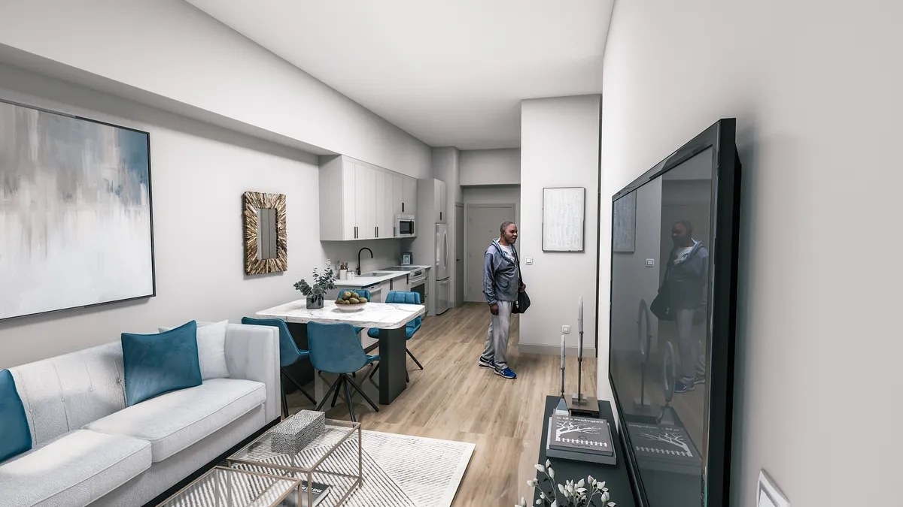
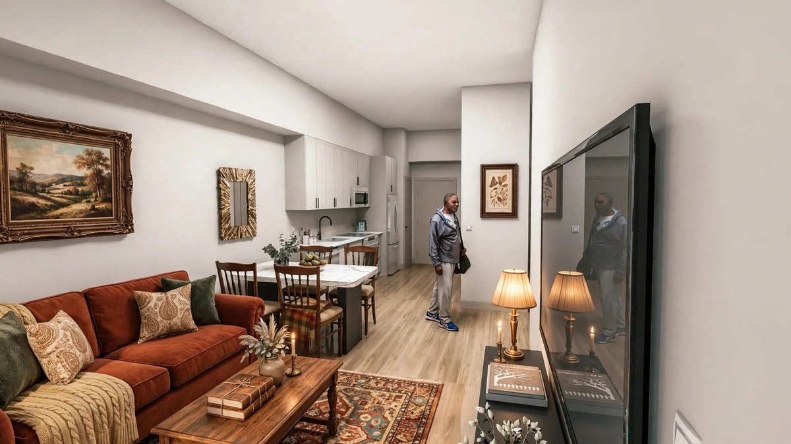
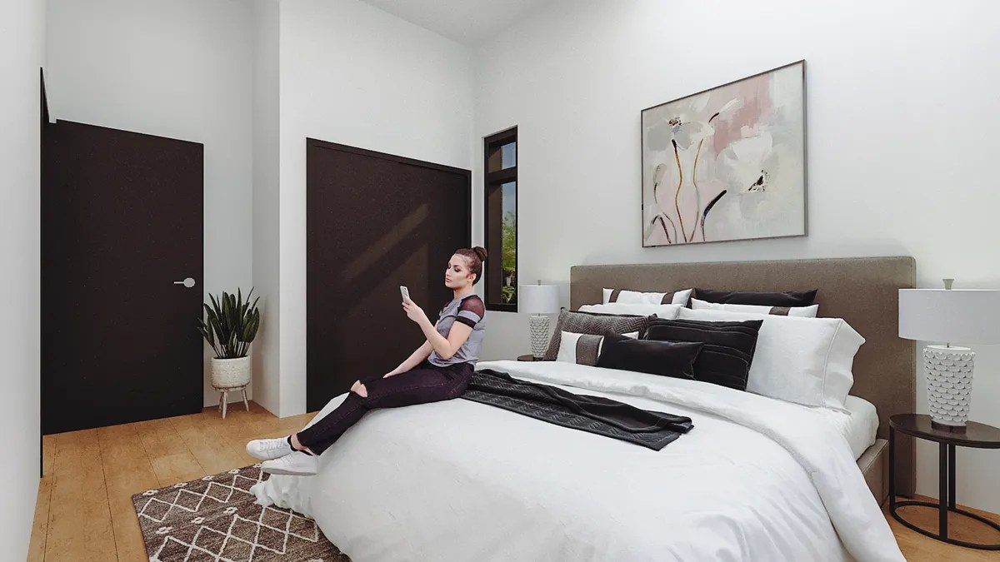
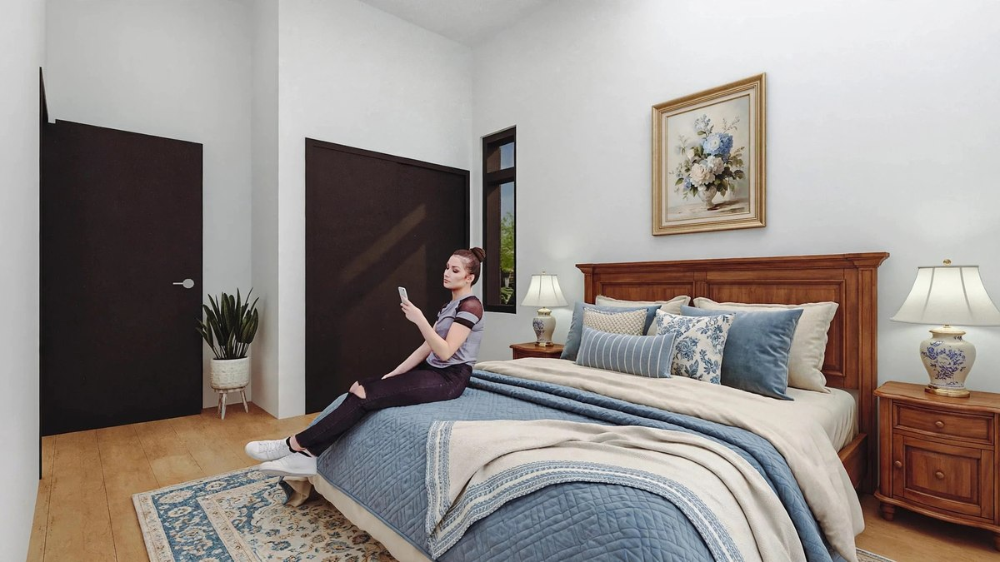
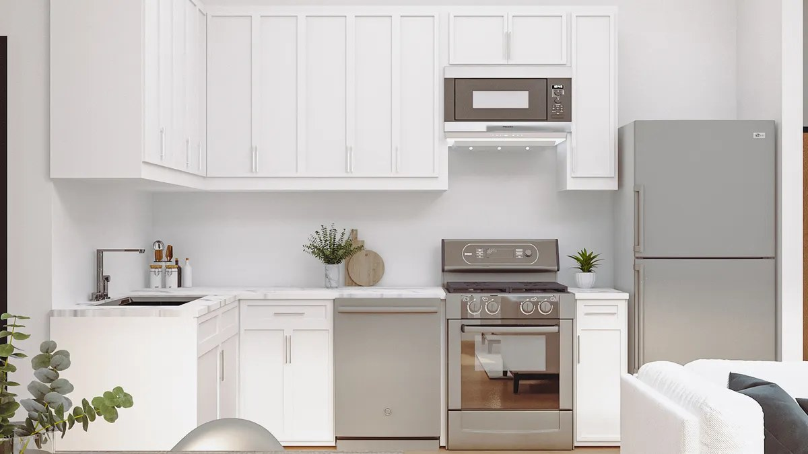
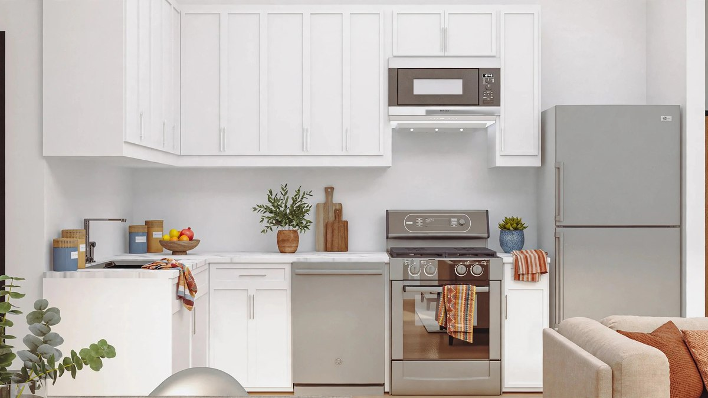
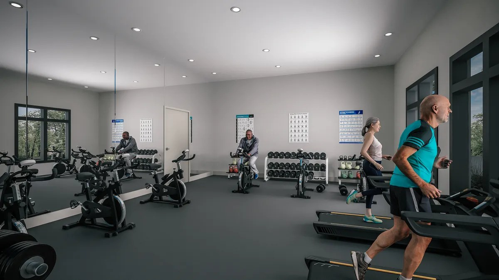
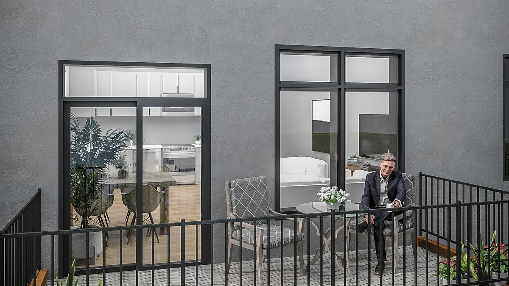
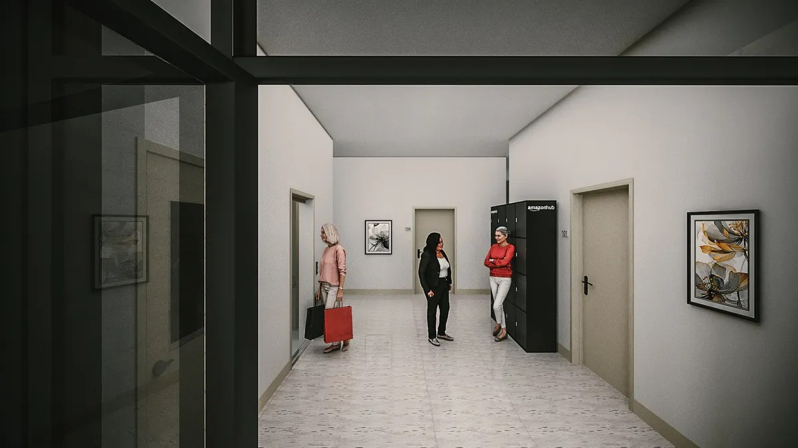

Atouts
Choisissez votre logement
Deux styles de logements disponibles, une même idée tout inclus : le chauffage, l'électricité et l'eau sont compris dans le loyer, dans chaque logement.
Les studios sont maintenant tous loués.
Stationnement et espaces de rangement disponibles — prix sur demande auprès de l'équipe de location. Certains logements sont sans obstacle / accessibles en fauteuil roulant.
Imaginez votre suite
Chaque logement commence comme une toile lumineuse et moderne — mais votre chez-vous devrait vous ressembler. Faites glisser le curseur sur chaque image pour comparer le concept publié avec un second style pour la même pièce — les armoires, les finis et l'aménagement restent exactement les mêmes; seuls les meubles et la décoration changent — et imaginez celui qui vous ressemble le plus.


Concept · Lumineux et moderneConcept · Chaleureux et douillet

Concept · Lumineux et moderneConcept · Doux et classique

Concept · Lumineux et moderneConcept · Accents chaleureux et conviviauxVisualisations de style seulement, pour vous aider à imaginer les possibilités : les deux côtés de chaque curseur sont des concepts, et non des photographies, et les finis réels des logements terminés peuvent varier.

Un seul loyer, sans surprises
Votre loyer tout inclus couvre les services publics qui arrivent habituellement en factures séparées — le chauffage, l'électricité et l'eau — alors un seul paiement mensuel suffit vraiment pour ceux-ci.
- Chauffage
- Électricité
- Eau
- Déneigement
- Entretien de la pelouse
- Buanderie dans le logement — votre propre laveuse et sécheuse
- Immeuble avec ascenseur
- Salle d'exercice et salon sur place
Ce sont des caractéristiques de votre logement et de l'immeuble — présentées ici pour que vous voyiez tout ce qui vient avec la vie au Château 632.
Vous pensez réduire la taille de votre logement?
Quitter une maison que vous aimez est une grande étape — vous n'avez pas à la franchir seul. L'équipe de location peut vous aider à vendre votre maison actuelle, étape par étape, et rendre votre transition vers une vie sans entretien aussi harmonieuse que possible.
Un aperçu de l'intérieur — concepts
L'immeuble est tout neuf : les images d'intérieur sont des rendus conceptuels générés par ordinateur et publiés par le projet — à titre d'illustration seulement; les finis réels peuvent varier.






Rockland tranquille, tout à proximité
Le Château 632 est situé sur la rue Laurier, près de la rue Caron, dans le secteur est et plus tranquille de Rockland — à distance de marche des parcs et des commerces, et à quelques minutes seulement des restaurants, des services médicaux et des services du quotidien. Le parfait équilibre entre autonomie et vie communautaire.
Bon à savoir
Qu'est-ce qui est inclus dans le loyer?
Le chauffage, l'électricité et l'eau sont inclus dans le loyer de chaque logement, et le déneigement et l'entretien de la pelouse le sont aussi. Le stationnement et le rangement sont disponibles — demandez les prix actuels à l'équipe de location.
Quand puis-je emménager?
Le Château 632 ouvre en novembre 2026, et les réservations sont en cours — déjà 45 % des logements sont réservés. La suite modèle est ouverte aux visites.
Comment réserver un logement?
Appelez l'équipe de location au 343-308-0543 ou écrivez à leasing@chateau632.ca pour réserver une visite et choisir votre logement.
Intéressé(e)? Réservez votre visite.
Géré par KLB Investment Realty Advisory · Inscription 1 chambre + coin détente MLS® X13219992 · RE/MAX Delta Realty
Équipe de location — Château 632
Votre premier appel pour les prix, la disponibilité et les visites
📞 343-308-0543
✉️ leasing@chateau632.ca
🌐 chateau632.ca
Suivez Château 632 sur Facebook
Chantal Benoit
Agente immobilière, RE/MAX Delta Realty — agente inscriptrice
📞 343-209-5833
✉️ sales@chantalbenoit.ca